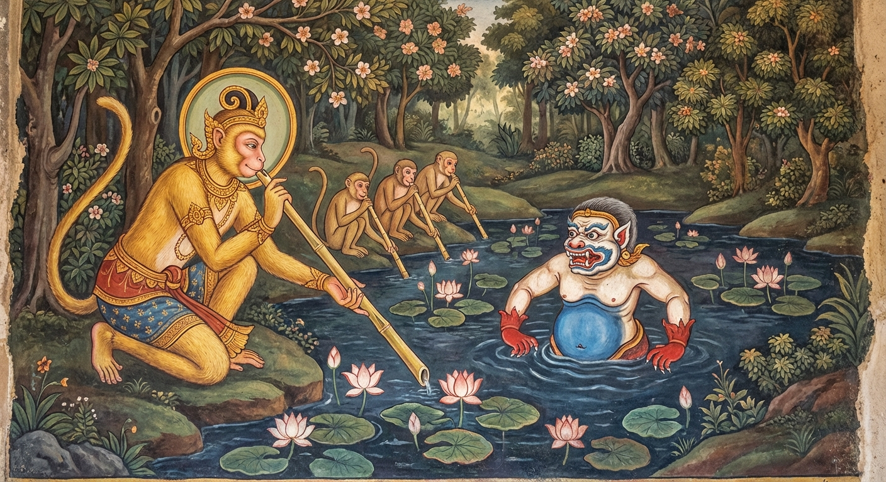

10. නළපාන ජාතකය (20)
“දිස්වා පදමනුත්තිණ්ණං” යන මේ ජාතක දේශනාව බුදුරජාණන් වහන්සේ කොසොල් ජනපදයේ චාරිකාවේ වඩින අතරතුර නළකපාන නම් ගමට පැමිණ, නළකපාන පොකුණ අසල ඇති වැටකේ වනයේ (කේතක වනයේ) වැඩවසන සේක්, බටදඬු අරබයා වදාළහ. එකල භික්ෂූන් වහන්සේලා නළකපාන පොකුණෙන් දිය නා, ඉඳිකටු ගුහා (ඉඳිකටු දමන කරඬු) සෑදීම සඳහා සාමණේරයන් ලවා බටදඬු ගෙන්වා ගත්හ. ඒ බටදඬු මුල සිට අග දක්වාම එකම සිදුරක් ඇති බව දැක, බුදුරජාණන් වහන්සේ වෙත එළඹ, “ස්වාමීනි, අපි ඉඳිකටු ගුහා සඳහා බටදඬු ගෙන්වා ගතිමු. ඒවා මුල සිට අගටම එකම සිදුරක් ඇත්තේය. මේ කිමෙක්දැ?” යි විමසූහ. බුදුරජාණන් වහන්සේ, “මහණෙනි, මෙය මාගේ පෙර අධිෂ්ඨානයකි” යි පවසා අතීත කථාව ගෙනහැර දැක්වූහ.
අතීතයේ එම වන ලැහැබ ඝන වනාන්තරයක් විය. එහි තිබූ පොකුණක ජල රකුසෙක් වාසය කළ අතර, ඔහු ජලයට බසින බසින සත්ත්වයන්ව ආහාරයට ගනී. එකල බෝසතාණන් වහන්සේ රෝහිත මුව පැටවකු (හෝලු මුවකු) තරම් ශරීර ප්රමාණයක් ඇති වඳුරු රජකුව ඉපිද, අසූදහසක් පමණ වඳුරු පිරිස පිරිවරාගෙන, එම රැළ ආරක්ෂා කරමින් ඒ වනයෙහි වාසය කළහ. ඔහු වඳුරු පිරිසට අවවාද දෙමින්, “දරුවනි, මේ වනයෙහි විස සහිත ගස් ද, අමනුෂ්යයන් අරක්ගත් පොකුණු ද ඇත. එබැවින් තොපි මින් පෙර නොකෑවිරූ පලතුරක් කන්නාහු නම් හෝ, මින් පෙර නොබීවිරූ ජලයක් බොන්නාහු නම් හෝ, පළමුව මගෙන් විමසිය යුතුය” යි පැවසූහ. ඔවුහු ද “එසේය, මැනවැ” යි එය පිළිගෙන, එක් දිනක් මින් පෙර නොගිය ප්රදේශයකට ගොස්, දවස පුරා ඔබමොබ ඇවිද ජලය සොයන්නාහු එක් පොකුණක් දැක, (වඳුරු රජුගේ අවවාදය සිහිපත් කර) පැන් නොබී බෝසතාණන් වහන්සේගේ පැමිණීම බලාපොරොත්තුවෙන් වාඩි වී සිටියහ. බෝසතාණන් වහන්සේ පැමිණ, “කිමෙක්ද දරුවනි, තොපි පැන් නොබොන්නාහුදැ?” යි ඇසූහ. “අපි ඔබතුමන්ගේ පැමිණීම බලාපොරොත්තුවෙන් සිටියෙමු” යි ඔවුහු කීහ. “දරුවනි, එය ඉතා යහපත්ය.” බෝසතාණන් වහන්සේ පොකුණ සිසාරා බලන විට පොකුණට බැස ගිය පියවර සටහන් දුටු නමුත් ගොඩට පැමිණි පියවර සටහන් නොදුටහ. “ඒකාන්තයෙන්ම මේ පොකුණ අමනුෂ්යයකු විසින් අරක් ගෙන ඇත” යි දැනගත් උන්වහන්සේ, “දරුවනි, පැන් නොබී සිටීමෙන් ඔබ කළ දෙය ඉතා යහපත්ය. මේ පොකුණ අමනුෂ්යයකු විසින් අරක් ගෙන ඇතැ” යි පැවසූහ.
දියරකුසා ද ඔවුන් පොකුණට නොබසින බව දැන, නිල් පැහැති උදරයක්, සුදු පැහැති මුහුණක් සහ රත් පැහැති අත්පා ඇතිව, ඉතා බියකරු වේශයක් මවාගෙන ජලය දෙබෑ කොට පිටතට අවුත්, “කුමක් නිසා වාඩි වී සිටින්නාහුද? පොකුණට බැස පැන් බොව්” යි කීය. ඉක්බිති බෝසතාණන් වහන්සේ ඔහුගෙන්, “තොප මෙහි උපන් ජල රකුසා ද?” යි ඇසූහ. “එසේය, මම වෙමි” යි ඔහු පිළිතුරු දුන්නේය. “තොප පොකුණට බැසගත් අයව ආහාරයට ගන්නෙහිද?” “එසේය, මම මේ පොකුණට බැසගත් කුඩා කුරුල්ලකු පවා ඉතිරි නොකරමි. තොපි සියලු දෙනාවම මම කන්නෙමි” යි රකුසා කීය. “අපි අපව ආහාරයට ගැනීමට තොපට ඉඩ නොදෙමු” යි බෝසතාණන් වහන්සේ පැවසූහ. “එසේ නම් පැන් නොබොන්නාහුද?” “ඔව්, අපි පැන් බොන්නෙමු. එහෙත් තොපගේ වසඟයට හසු නොවන්නෙමු.” “එසේ නම් පැන් බොන්නේ කෙසේද? පොකුණට බැස පැන් බොතැයි තොප සිතන්නෙහිද?” “නැත, අපි අසූදහසක් දෙනාම පොකුණට නොබැස, එක් එක් බටදඬුව බැගින් ගෙන නෙළුම් දඬු මගින් පැන් උරා බොන්නාක් මෙන්, තොපගේ පොකුණෙන් පැන් බොන්නෙමු. එවිට තොපට අපව ආහාරයට ගත නොහැකි වනු ඇත.” මෙම කාරණය දැනගත් බුදුරජාණන් වහන්සේ, බුද්ධත්වයට පත්වීමෙන් පසු මෙම ගාථාවේ පළමු පද දෙක වදාළහ.
“පොකුණෙන් ගොඩ නැගුණු පිය සටහන් මා විසින් නොදකින ලදී. දියට බැසගිය පිය සටහන් පමණක් දක්නා ලදී.”
“පොකුණෙන් ගොඩ නැගුණු පිය සටහන් මා දුටුවේ නැත. දියට බැසගිය පිය සටහන් පමණක් දුටුවෙමි. එබැවින් මම බට නළයෙන් පැන් බොන්නෙමි. තොපට මා විනාශ කළ නොහැකි වනු ඇත.”
මෙහි අර්ථය නම්: මහණෙනි, ඒ වඳුරු රජ එම පොකුණෙන් ගොඩ නැගුණු එකදු පිය සටහනක්වත් නොදුටුවේය. ජලයට බැසගිය පිය සටහන් පමණක්ම දුටුවේය. මෙසේ ‘දිස්වා පදං අනුත්තිණ්ණං දිස්වාන ඔතරිතං පදං’ (ගොඩ නැගුණු පියවර නොදැක, බැසගිය පියවර දැක) යන්නෙන්, ‘මේ පොකුණ ඒකාන්තයෙන්ම අමනුෂ්යයකු විසින් අරක් ගෙන ඇතැ’ යි දැනගෙන, ඒ රකුසා සමඟ කථා කරමින් පිරිස මැද මෙසේ පැවසීය.
“අපි බට නළයෙන් පැන් බොන්නෙමු.”
මෙහි අර්ථය නම්, ‘අපි තොපගේ පොකුණෙන් බට දඬුව ආධාරයෙන් පැන් බොන්නෙමු’ යන්නයි. නැවතත් මහාසත්ත්වයෝ මෙසේ පැවසූහ.
“ඔබට මා මැරිය නොහැක.”
මෙසේ පිරිස සමඟ බට නළයෙන් පැන් බොන මා, තොපට කිසිසේත් විනාශ කළ නොහැකි වන්නේය යන අර්ථයයි.
ඉක්බිති බෝසතාණන් වහන්සේ මෙසේ පවසා, එක් බට දඬුවක් ගෙන්වාගෙන පාරමිතා ධර්ම සිහිපත් කොට, සත්ය ක්රියාවක් සිදුකර
එයට පිම්බේය. එවිට බටය ඇතුළත වූ සියලු ගැට නැති වී, මුල සිට අග දක්වාම එය එකම සිදුරක් විය. මෙම ආකාරයෙන් තවත් බට
දඬු ගෙන්වාගෙන පිඹ පිඹ දුන්නේය. නමුත් මෙසේ කිරීමෙන් මෙය නිම කළ නොහැකි බව දැක, බෝසතාණන් වහන්සේ ‘මේ පොකුණ වටා
හටගත් සියලු බට දඬු එකම සිදුරක් ඇත්තේ වේවා!’ යි අධිෂ්ඨාන කළහ. බෝසත්වරුන්ගේ පරාර්ථකාමීත්වය මහත් බැවින් ඒ
අධිෂ්ඨානය එලෙසම ඉටු විය. එතැන් පටන් ඒ පොකුණ වටා හටගත් සියලු බට දඬු, ගැට නැතිව එකම සිදුරක් ඇත්තේ විය.
මෙම
කල්පය තුළ පවතින ‘කල්පස්ථිති ප්රාතිහාර්යයන්’ (කල්පය පුරා පවතින හාස්කම්) සතරක් ඇත. ඒවා නම්:
- සඳ මඬලෙහි ඇති සාවාගේ සලකුණ මේ මුළු කල්පය පුරාම පවතී.
- වට්ටක ජාතකයේ සඳහන් පරිදි ගින්න නිවුණු ස්ථානය (වටු පැටියා සිටි තැන) මේ මුළු කල්පය පුරාම ගින්නෙන් නොදැවෙයි.
- ඝටීකාර බමුණාගේ ගෙය පිහිටි ස්ථානය මේ මුළු කල්පය පුරාම වැස්සෙන් නොතෙමී පවතී.
- මෙම පොකුණ වටා හටගන්නා බට දඬු මේ මුළු කල්පය පුරාම එක් සිදුරක් ඇත්තේ වෙයි.
යන මේවා කල්පස්ථිති ප්රාතිහාර්ය සතර නම් වේ. බෝසතාණන් වහන්සේ මෙසේ අධිෂ්ඨාන කොට එක් බට නළයක් ගෙන හිඳගත්හ. අනෙක් අසූදහසක් වඳුරෝ ද එක් එක් බටය බැගින් ගෙන පොකුණ වටා හිඳගත්හ.
බෝසතාණන් වහන්සේ මෙසේ අධිෂ්ඨාන කොට එක් බට නළයක් ගෙන හිඳගත්හ. අනෙක් අසූදහසක් වඳුරෝ ද එක් එක් බට නළය බැගින් ගෙන පොකුණ වටා වාඩි වූහ. ඔවුන් පොකුණේ ඉවුරේ වාඩි වී බෝසතාණන් වහන්සේ හා එක්ව බට නළවලින් ඇද පැන් පානය කළහ. මෙසේ ඔවුන් පැන් බී කල්හි, දියරකුසාට කිසිවක් කරගත නොහැකිව, අසතුටු සිතින් යුතුව තම විමානයටම ගියේය. බෝසතාණන් වහන්සේ ද පිරිස සමඟ වනයට පිවිසියහ.

බුදුරජාණන් වහන්සේ, “මහණෙනි, මේ බට දඬුවල ඇත්තේ එකම සිදුරක් වීම මාගේම පැරණි අධිෂ්ඨානයක ප්රතිඵලයකි” යි මෙම ධර්ම දේශනාව ගෙනහැර දක්වා, පූර්වාපර සන්ධි ගළපා ජාතකය නිම කළ සේක. “එකල දියරකුසා වූයේ දැන් දේවදත්තය. එකල අසූදහසක් වඳුරු පිරිස වූයේ දැන් බුදු පිරිසය. උපායෙහි දක්ෂ වඳුරු රජ වී උපන්නේ මම ම වෙමි.”
දසවැනි වූ නළපාන ජාතක වර්ණනාව නිමාවිය.
දෙවැනි වූ සීල වර්ගයයි.
එහි සාරාංශ ගාථාව මෙසේය:
නිග්රෝධ, ලක්ඛණ, කණ්ඩි, වාතමිග, ඛරාදිය, තිපල්ලත්ථ, මාලුත, මතභත්ත, අයාචිත සහ නළපාන යන මේ ජාතක දසයයි.